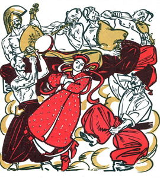

Твір містить 6 частин, які змістовно пов’язані з подорожжю Енея і тими пригодами, що трапилися з ним.
Експозиція: знайомство з Енеєм і його ватагою троянців, які нагадують козаків-запорожців, з їх завзяттям, хоробрістю, веселими звичаями і войовничим настроєм.
Зав’язка: подорож Енея з троянцями у пошуках Італії.
Кульмінація: битва Енея з Турном, в результаті якої боги також розділились на два загони.
Розв’язка: перемога Енея над Турном, бо Зевс зглянувся на героя і став на його бік: Живе хто в світі необачно, / Тому нігде не буде смачно, / А більш, коли і совість жметь.